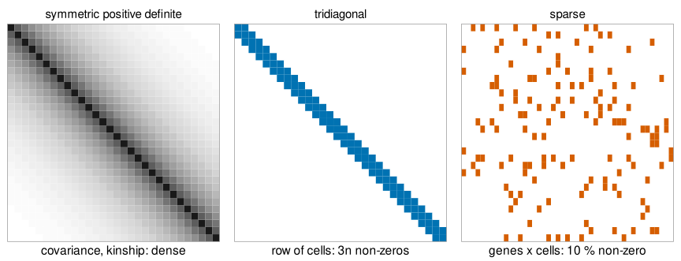
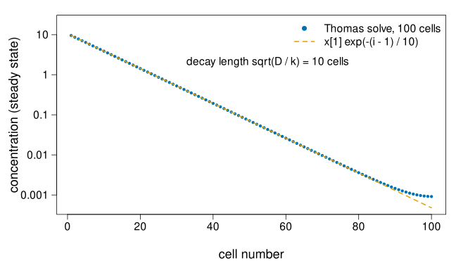
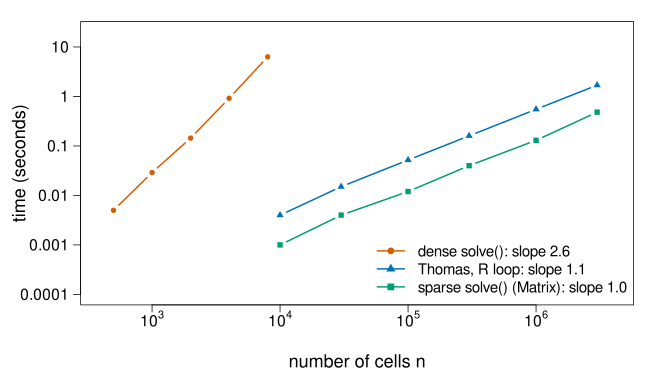
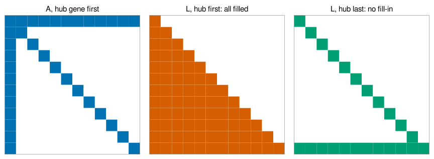
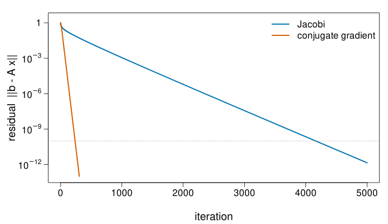

LU costs \tfrac23 n^3 operations and 8n^2 bytes, whatever the matrix looks like. Most matrices in biology have structure, and using it changes the cost by orders of magnitude.
Symmetric positive definite (covariance, kinship, linkage disequilibrium): CholeskyA = LL^T, half the work of LU, no pivoting, and a free log-determinant.
Tridiagonal (a row of cells exchanging a signal): the Thomas algorithm solves in O(n), a million cells in half a second.
Sparse (count matrices, networks, 2D grids): store and compute only the non-zeros, and watch out for fill-in.
A glimpse of iterative solvers (Jacobi, conjugate gradient) that only need A\mathbf{x}.
Three kinds of structure

structure
biology
what we save
symmetric positive definite
covariance, kinship, LD
half the work, no pivoting
tridiagonal / banded
a row of cells, 1D diffusion
O(n) instead of O(n^3)
sparse
counts, networks, 2D grids
memory and work \propto non-zeros
Symmetric positive definite (SPD)
A matrix A is SPD if it is symmetric (A = A^T) and
\mathbf{x}^T A \mathbf{x} > 0 \quad \text{for every } \mathbf{x} \neq \mathbf{0} \qquad \Longleftrightarrow \qquad \text{all eigenvalues} > 0.
Covariance\Sigma of gene expression: \mathbf{x}^T \Sigma \mathbf{x} = \operatorname{Var}(x_1 g_1 + \dots + x_n g_n) \ge 0. A variance cannot be negative.
Kinship / genomic relationship matrices in mixed models, LD (correlation between SNP markers), precision matrices of gene networks.
Example: A = \begin{pmatrix} 4 & 2 \\ 2 & 5 \end{pmatrix}, eigenvalues 6.56 and 2.44: SPD.
Cost \approx \tfrac13 n^3: half of LU. Memory: one triangle.
No pivoting needed: for an SPD matrix the number under every square root is positive, and the entries of L cannot grow (\ell_{ij}^2 \le a_{ii}). Cholesky is stable.
If a square root of a number \le 0 is needed, A is not SPD. Cholesky is the cheapest test for positive definiteness.
LU (partial pivoting)
Cholesky
works for
any non-singular A
SPD A only
operations
\tfrac23 n^3
\tfrac13 n^3
pivoting
needed
not needed
Cholesky in R
A <-matrix(c(4, 2, 2, 5), nrow =2)R <-chol(A) # upper triangular, A = t(R) %*% RR# [,1] [,2]# [1,] 2 1# [2,] 0 2b <-c(2, 9)y <-forwardsolve(t(R), b) # solve L y = b (L = t(R))x <-backsolve(R, y) # solve R x = yx# [1] -0.5 2.0
chol() returns the upper factor R = L^T. Python’s np.linalg.cholesky returns the lowerL: same numbers, transposed.
forwardsolve / backsolve: two triangular solves, O(n^2) each. Factor once, solve for many \mathbf{b}.
Biology: the log-likelihood needs \log\det\Sigma
A multivariate normal log-likelihood (mixed models, GWAS, phylogenetic regression) contains -\tfrac12 \log\det\Sigma - \tfrac12 (\mathbf{y}-\boldsymbol\mu)^T \Sigma^{-1} (\mathbf{y}-\boldsymbol\mu).
n <-2000S <-0.9^abs(outer(1:n, 1:n, "-")) # correlation of SNP markers (LD)det(S)# [1] 0R <-chol(S)2*sum(log(diag(R))) # log det S# [1] -3319.802(n -1) *log(1-0.9^2) # exact, for this matrix# [1] -3319.802
\det\Sigma = \det(L)^2 = \prod_i \ell_{ii}^2, so \log\det\Sigma = 2\sum_i \log \ell_{ii}: a sum of logs, as for likelihoods.
The determinant itself is e^{-3320}: it underflows to 0.
The quadratic term is two triangular solves with the same L. Never form \Sigma^{-1}.
Simulating correlated traits
If \mathbf{z} has independent N(0,1) entries, then \mathbf{y} = L\mathbf{z} has covariance LL^T = \Sigma.
This is how phenotypes with a given kinship, or expression with a given gene covariance, are simulated.
\operatorname{Cov}(L\mathbf{z}) = L \operatorname{Cov}(\mathbf{z}) L^T = L I L^T = \Sigma.
When Cholesky fails: not positive definite
Covariance of 10 genes estimated from only 5 samples:
set.seed(1)X <-matrix(rnorm(5*10), nrow =5) # 5 samples x 10 genesC <-cov(X) # 10 x 10, rank <= 4try(chol(C))# Error in chol.default(C) : the leading minor of order 5 is not positivesignif(eigen(C, symmetric =TRUE)$values, 2)# [1] 4.9e+00 1.8e+00 1.0e+00 2.6e-01 1.2e-16 3.8e-17 3.1e-17 5.0e-18# [9] -7.2e-17 -6.5e-16dim(chol(C +0.1*diag(10))) # ridge / shrinkage: SPD again# [1] 10 10
With fewer samples than genes the covariance is only semidefinite: six eigenvalues are 0, and rounding makes some slightly negative.
Check:chol() fails, or the smallest eigenvalue is \le 0 (relative to the largest).
Fixes: more samples, shrinkageC + \lambda I, or a model with an error term (\sigma_g^2 K + \sigma_e^2 I).
Biology: a morphogen in a row of cells
A source cell (cell 1) makes a morphogen; each cell exchanges it with its two neighbours (rate D) and degrades it (rate k). At steady state, for cell i:
This is LU, but every row has only one entry to eliminate and nothing appears outside the band: about 8n operations and 4n numbers of memory.
Any banded matrix (bandwidth p) works the same way: O(np^2) operations, no fill outside the band (without pivoting).
Thomas in R
thomas <-function(a, b, c, d) { n <-length(d)for (i in2:n) { # forward sweep: eliminate a[i] w <- a[i] / b[i -1] b[i] <- b[i] - w * c[i -1] d[i] <- d[i] - w * d[i -1] } x <-numeric(n) x[n] <- d[n] / b[n]for (i in (n -1):1) # back substitution x[i] <- (d[i] - c[i] * x[i +1]) / b[i] x}
Convention: all four vectors have length n; a[1] and c[n] are not used.
The gradient, and how to check it

n <-100; D <-1; k <-0.01a <-c(0, rep(-D, n -1))cc <-c(rep(-D, n -1), 0)b <-c(D + k, rep(2*D + k, n -2), D + k)s <-c(1, rep(0, n -1))x <-thomas(a, b, cc, s)x[11] / x[1] # about exp(-1)# [1] 0.3680326k *sum(x) # decay = production# [1] 1
Checks: the residual max(abs(A %*% x - s)) is 1.8\times10^{-15}; total degradation equals production; the decay length matches \sqrt{D/k} = 10 cells.
O(n) against O(n^3)

Dense solve() at 8000 cells: 6 s. At 10^6 cells (125\times more): 6\cdot 125^{2.6} to 6 \cdot 125^3 s, i.e. weeks to months, and 8 TB of memory.
Thomas, even as an interpreted R loop: 10^6 cells in 0.55 s.
When Thomas fails: no pivoting
a <-c(0, 1, 1); b <-c(1, 1, 1); cc <-c(1, 1, 0); d <-c(1, 2, 3)thomas(a, b, cc, d) # 2nd pivot: 1 - 1 * 1 = 0# [1] NaN NaN NaNsolve(matrix(c(1, 1, 0, 1, 1, 1, 0, 1, 1), 3), d) # pivots: fine# [1] -1 2 1
The matrix is not singular, but the second pivot b_2 - (a_2/b_1)c_1 is exactly 0. A tiny pivot instead of 0 gives a confident wrong answer.
Safe when the matrix is diagonally dominant, |b_i| \ge |a_i| + |c_i| (strictly in at least one row), or SPD. Both hold for diffusion and exchange problems: 2.01 > 1 + 1.
Dense: 8 bytes per entry. A 20 000 genes × 100 000 cells count matrix = 16 GB.
Single-cell count matrices are > 90 % zeros. Compressed sparse column (CSC) keeps each non-zero’s value (8 bytes) and row index (4 bytes), plus one pointer per column: ~12 bytes per non-zero. At 10 % non-zero: 2.4 GB.
Centring each gene turns every zero into -\text{mean}: dense again, silently.
This unit: what CSC looks like inside, which operations keep sparsity, and which destroy it.
Cell 3 is empty: p[3] = p[4]. Column sums (library sizes) and M\mathbf{v} touch each non-zero once: O(\text{nnz}).
Sparse solves in R
library(Matrix)n <-1e6; D <-1; k <-0.01A <-bandSparse(n, k =-1:1, diagonals =list(rep(-D, n -1),c(D + k, rep(2* D + k, n -2), D + k), rep(-D, n -1)))s <-c(1, rep(0, n -1))nnzero(A)# [1] 2999998format(object.size(A), units ="MB")# [1] "38.1 Mb"system.time(x <-solve(A, s))["elapsed"]# elapsed# 0.498
bandSparse, sparseMatrix build sparse matrices; solve on them calls a sparse direct solver (sparse LU, or sparse Cholesky for a symmetric matrix).
38 MB instead of 8 TB. The sparse solver found the band by itself.
Failure: the inverse of a sparse matrix is dense
n <-100A <-bandSparse(n, k =-1:1, diagonals =list(rep(-1, n -1),c(1.01, rep(2.01, n -2), 1.01), rep(-1, n -1)))nnzero(A)# [1] 298nnzero(solve(A))# [1] 10000
Every cell influences every other cell, so A^{-1} has no zeros. At 10^6 cells: 8 TB.
Rule:solve(A, b), never solve(A) %*% b. The factors of a band matrix stay sparse; the inverse does not.
Fill-in: when elimination creates non-zeros
A gene network with one hub gene connected to all others (precision matrix, an arrow shape):

Hub first: eliminating row 1 adds a multiple of it to every other row, so every zero below fills in. L is full.
Hub last: nothing to fill. L has 2n - 1 non-zeros. Same matrix, renumbered.
A fill-reducing ordering (AMD, nested dissection) renumbers the unknowns before factorising. Cholesky(A, perm = TRUE) and solve do this by default.
On a 30 × 30 grid (2D diffusion): A has 4380 non-zeros, L 27 029 in natural order, 10 231 reordered. In 2D and 3D some fill-in is unavoidable.
A glimpse of iterative solvers
Instead of factorising, improve a guess using only products A\mathbf{x}: O(\text{nnz}) per step, no fill-in.
Jacobi: solve each equation for its own unknown, using the old values of the others: \mathbf{x} \leftarrow \mathbf{x} + D^{-1}(\mathbf{b} - A\mathbf{x}), D = diagonal of A.
# A, s: the morphogen system for 1000 cells, built as beforex <-numeric(1000); dA <-diag(A)for (it in1:10000) { r <- s - (A %*% x)[, 1] # residual: O(nnz) workif (sqrt(sum(r^2)) <1e-10) break x <- x + r / dA # Jacobi update}it# [1] 4159
Conjugate gradient (CG, for SPD A) picks a better direction each step: about 240 iterations here instead of about 4160.
Iterative solvers: convergence and failure

Jacobi on \begin{pmatrix}1&2\\2&1\end{pmatrix}\mathbf{x} = \begin{pmatrix}3\\3\end{pmatrix}:
A2 <-matrix(c(1, 2, 2, 1), 2)x <-c(0, 0)for (it in1:5) { r <-c(3, 3) - A2 %*% xcat(sqrt(sum(r^2)), "") x <- x + r /diag(A2)}# 4.242641 8.485281 16.97056 33.94113 67.88225
Jacobi gains digits at a fixed rate (linear convergence, slope on the log plot); CG is much steeper.
Jacobi diverges unless (roughly) A is diagonally dominant; CG needs SPD.
Check: always monitor the residual; stop on a tolerance, and report if the iteration limit was hit.
Which solver?
your matrix
use
R
cost
dense, general
LU with pivoting
solve(A, b)
\tfrac23 n^3
dense, SPD
Cholesky
chol, backsolve
\tfrac13 n^3
tridiagonal / banded
Thomas / band LU
hand-written, Matrix::solve
O(n)
sparse, moderate size
sparse direct + ordering
Matrix::solve, Cholesky
depends on fill-in
sparse, huge (3D, networks)
iterative (CG, …)
packages; Iterative linear solvers in depth
O(\text{nnz}) per step
Checks: symmetric? isSymmetric(A). SPD? chol succeeds. Sparse? nnzero(A) / length(A). After: residual, and nnzero of the factor.
Summary
SPD matrices (covariance, kinship, LD): CholeskyA = LL^T, \tfrac13 n^3, no pivoting. \log\det A = 2\sum\log\ell_{ii} avoids underflow; L\mathbf{z} simulates correlated traits. chol failing means “not positive definite” (too few samples): shrink with +\lambda I.
Tridiagonal (row of cells, 1D diffusion): Thomas algorithm, \approx 8n operations. No pivoting, so check diagonal dominance and the residual.
Sparse: CSC stores value + row index per non-zero plus column pointers. Work and memory scale with nnz, until an operation makes the matrix dense: centring, the inverse, or fill-in in a bad elimination order.
Fill-in depends on the ordering: hub last, or let Cholesky(perm = TRUE) choose.
Iterative solvers need only A\mathbf{x}: Jacobi (slow, needs diagonal dominance), CG (SPD). Monitor the residual.
Next: Part 4, Least squares: normal equations vs QR, where X^TX is SPD and Cholesky returns, along with its accuracy problem.